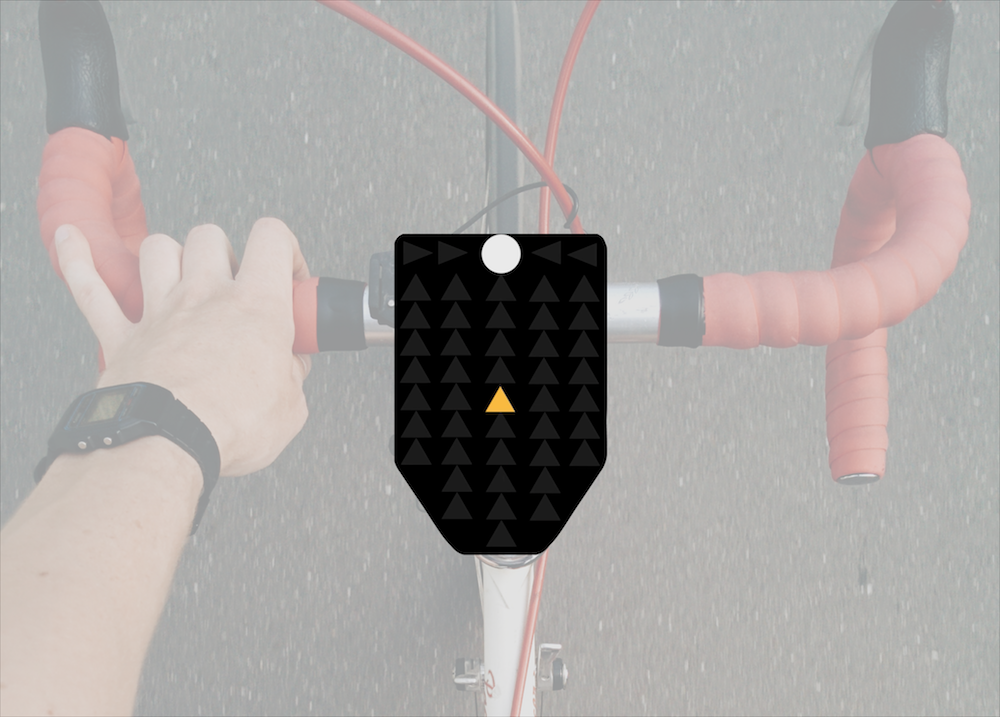
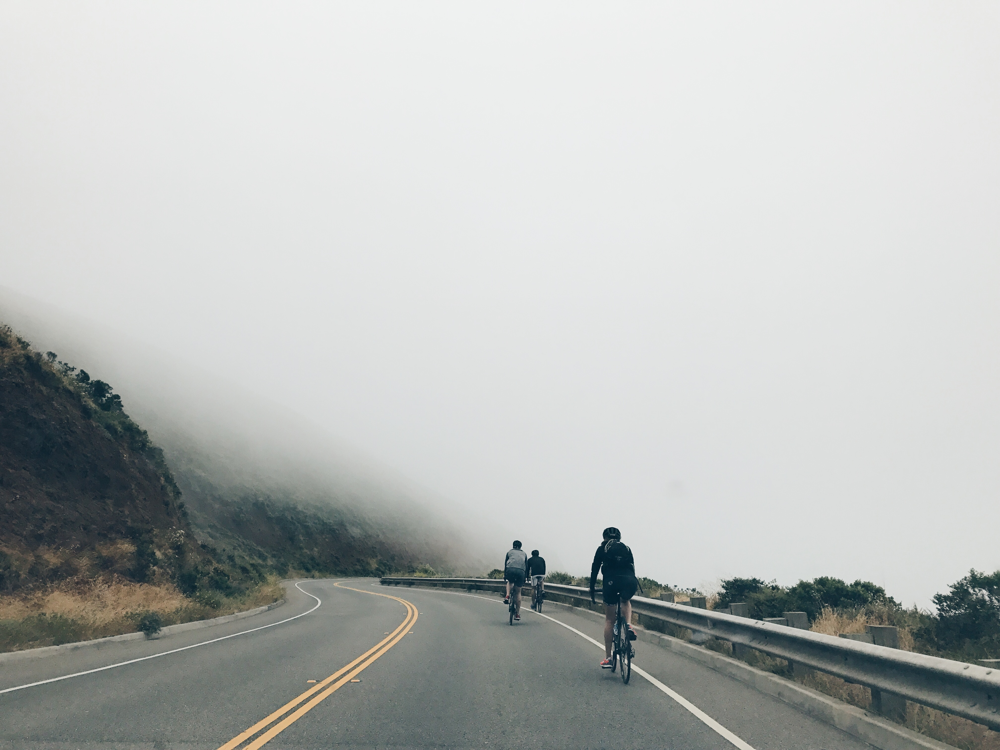
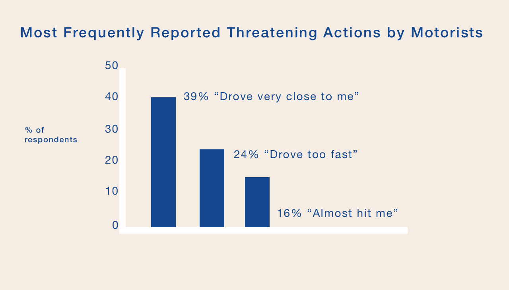
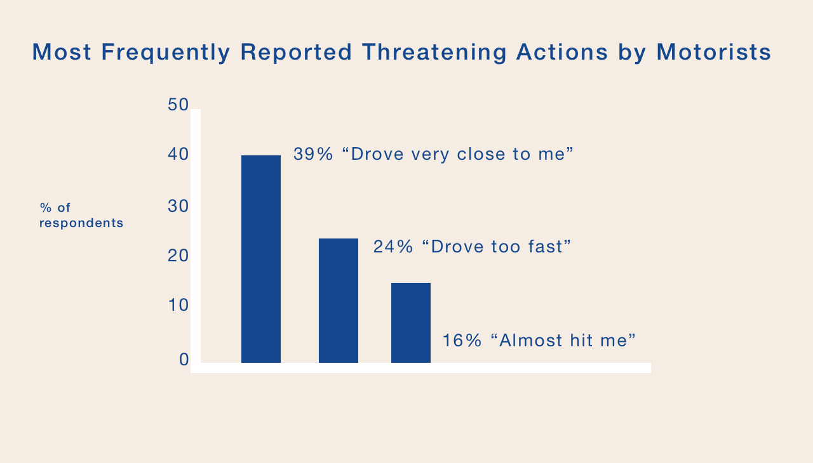
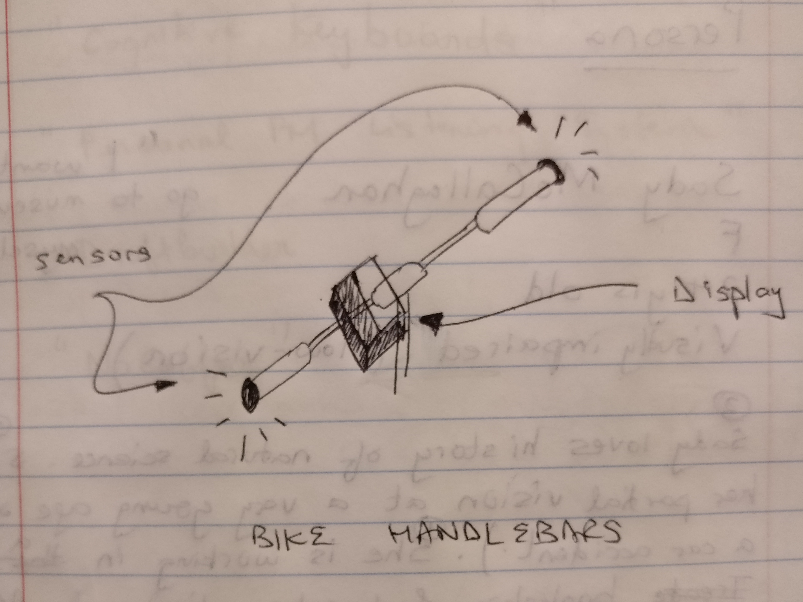
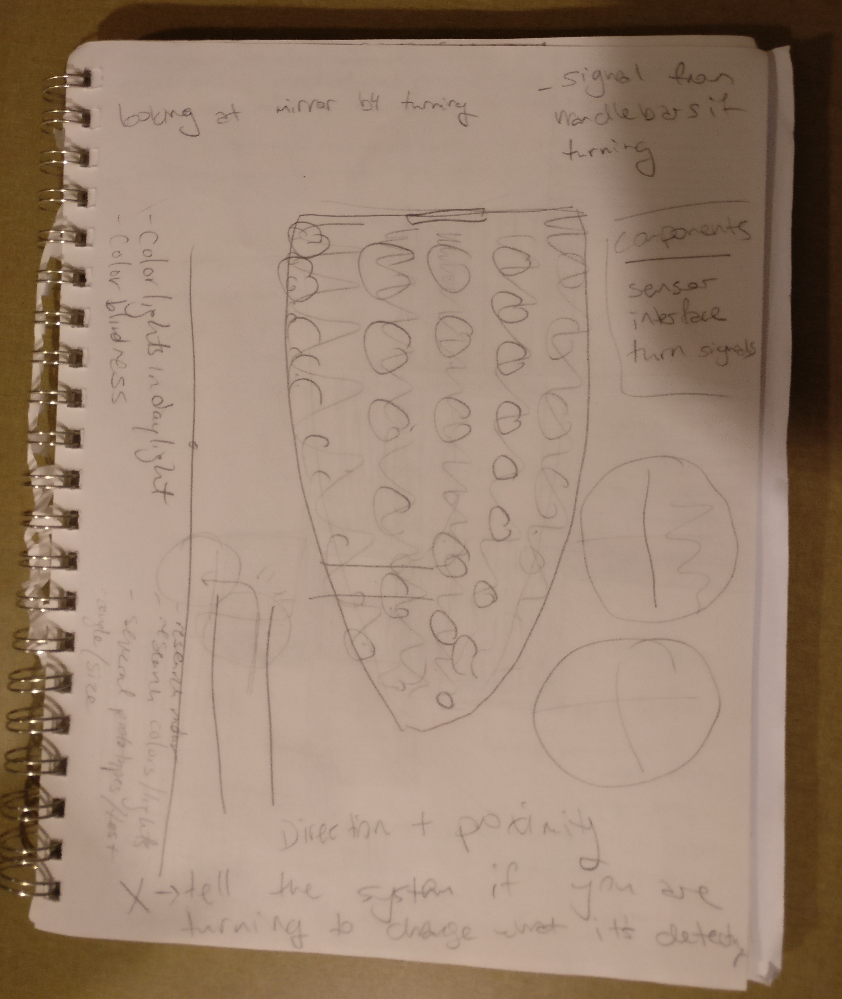
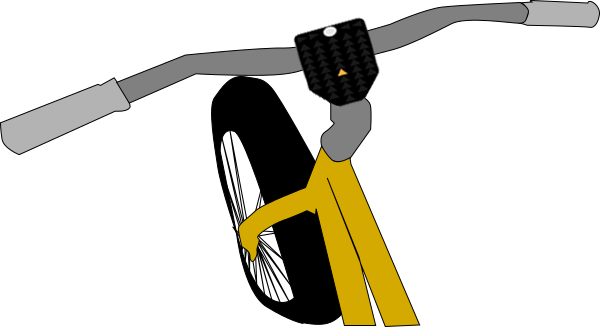

CYCLIKA
Empowering hearing impaired cyclists to take back their roads.
 Cyclika is a handlebar-mounted device that supports cyclists by visually alerting them of vehicles approaching from behind.
I was part of a 5 student team preparing for the CHI Student Design Competition 2017. We rotated through the roles of UX researchers and designers each week to round out our experience with interviewing, conducting observations, sketching, and prototyping.
Role: UX Researcher and Designer
Timeline: September 2016 – January 2017
Methods:
Overview
Our team was inspired by the 2017 CHI Student Design Competition challenge: to develop an intervention that would empower underserved user groups to engage in activities that would otherwise be out of reach. We asked ourselves how we could improve road safety for hearing-impaired cyclists.
While we initially focused our population scope to encompass cyclists experiencing permanent hearing-impairment seeking safer conditions while riding in high traffic areas, we found in our research that cyclists experiencing situational or temporary hearing-impairment are also seeking ways to take more active control of their safety. According to a 2012 survey by the US Department of Transportation, 83% of American cyclists feel a threat to their personal safety when motorists drive too fast or too close. Moreover, cyclists living in underserved communities with poor road conditions risk significantly higher rates of injury and fatality.
 

Data from US Department of Transportation Survey, 2012
Phase I: Ideation
After a preliminary literature review and competitive analysis, our team conducted five contextual interviews: three with users who have experienced hearing-impairment, and two with students who commute by bicycle several times a week in high-volume traffic.
Brainstorming
Next, we brainstormed: methods that we could use to provide users with feedback about their surrounding environment; sensors we could use to detect user surroundings; and the physical form the device itself could take.

From our competitive analysis, we learned that haptic feedback methods have been explored in this context, but after talking with users, it was apparent that haptic feedback could be confused with bumpy road conditions or mobile phone vibrations, and ultimately either distract the user or lead to a lack of engagement. We decided that visual feedback would be more effective.
We also discussed where to place the device: should the user wear it, or should it be mounted on the bike? Again, users pointed us towards mounting the device on the bicycle handlebars, as that location can provide alerts in the periphery of the user's vision without obstructing their main field of vision.
Sketching
We sketched out different concepts, and discussed them with potential users.
 Key Insights
We defined the following requirements to narrow down and select a final concept:
- to detect rear-approaching traffic
- to provide feedback that relays information about nearby vehicles
- to alert users about varying levels of urgency of nearby traffic
- to allow users to proactively indicate to nearby motorists their intention to turn
- to empower individuals to cycle confidently in traffic
Phase II: Digital Prototype and User Testing
Our final concept consisted of two main parts. Users mount a small interface on the center of their handlebars. When a triangle lights up, it indicates that a vehicle is approaching the cyclist, who is represented by the circle at the top. The interface uses space and color to assist users in identifying their proximity to the vehicle. The interface is visible in the cyclist’s peripheral vision, and can be used during the day as well as at night.
Cyclika detects vehicles with a radar mounted below the seat. Attached to the radar is a grid of LED lights that cyclists can use to indicate turns. Users can activate the rear lights using buttons on the handlebar.

We developed digital animations to replicate Cyclika's user experience so that we could test the clarity of the product's visual alerts with users. Our initial prototype featured 9 columns of lights. After conducting two initial usability tests, we found that users were confused by the proximity of vehicles with that many columns. One user wondered "if a vehicle is four columns away, does that mean I don't have to worry about it?" We decided to pare down our design to feature five columns. If a vehicle is two columns away, it will pass them without harm; if it is one column away, it is potentially dangerous; and if it is in the same column, it is approaching directly from behind and is of more extreme danger.
Final Concept
Phase III: Reflection
We received valuable feedback from the judges of the CHI competition. Their main concern was related to the potential for the product to distract users and potentially lead to danger. Even though the product is in the periphery of the user's vision, could it potentially be distracting and continually draw user's line of sight to the product and away from the road itself? This is a very important concern, and one that draws back our original question about feedback methods. Is visual feedback really the most effective? And if so, how can it be used without distracting the user?
With this feedback in mind, I think it would be useful to generate a number of low fidelity prototypes to investigate how other parts of the bike or the cyclists body could be used to provide the user with less distracting feedback. A number of cyclists use mirrors attached to their helmets, for example - I'd be really interested in exploring the potential of the helmet to carry vital information to the user.